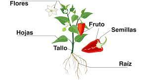

Las plantas son los seres vivos miembros del reino vegetal. Se trata de organismos autótrofos, desprovistos de capacidad de movimiento, y compuesto principalmente de celulosa. Los árboles, la meleza, el césped,las algas y los arbustos, son todos miembros e este reino de la vida.
Importancia de las plantas
Las plantas son indispensables para la vida del planeta como la conocemos, ya que son las responsables de la oxigenación de la atmósfera, sin la cual los organismos que repiramos nos asfixiaríamos.
Reproducción de las plantas
Las plantas se reproducen tanto sexual como asexualmente, pero sus mecanismos exactos para ello dependen generalmente de la especie.
Reprodución sexual. Se da en las especies que poseen floración, dado que en las flores se hallan los órganos sexuales. Algunas plantas son hermafroditas (poseen ambos sexos) mientras que otras poseen un sexo.
Reproducción asexual. Este modo de reproducción no requiere de flores ni polinización, sino que echa mano a otras partes de la planta. Estos mecanismos carecen de variabilidad genética y producen individuos clónicos, en vez de individuos originales.
Partes de una planta

Dependiendo del tipo de planta, ésta puede tener unas u otras estructuras. Pero a grandes rasgos, las plantas se componen de:
Raíz. El órgano fundamental de todo tipo de plantas, que sirve para absorber el agua y los nutrientes del medio en que se encuentran, sea líquido o sólido. Generalmente las raíces no suelen ver la luz, y crecen de forma rizomática, es decir, desordenada. En sus estructuras, además, suelen guardarse nutrientes y sustancias de emergencia.
Tallo. Los tallos son prolongaciones aéreas de la planta, que crecen en sentido contrario de la raíz y poseen generalmente un sistema de vasos conductores para transportar la savia y los nutrientes hacia los demás órganos, como las hojas.
Hojas. Órganos de diversa forma (redonda, alargada), color (entre verde y rojo) y textura en los que se realiza la fotosíntesis. Nacen del tallo o en las ramas, y dependiendo de la especie vegetal, pueden secarse y caer ante la llegada del frío (el otoño) para disminuir la pérdida de agua del árbol, o no.
Flores. Se trata de los órganos reproductivos de las plantas, de los cuales se generan luego los frutos y las semillas. Se componen generalmente de estambres (órganos sexuales masculinos) y pistilos (órganos sexuales femeninos), aunque existen plantas de un único sexo definido.
Semillas. Una vez fecundadas las flores, las plantas producen semillas, que son embriones listos para producir un nuevo individuo. En ocasiones estas semillas se producen sin necesidad de flores y fecundación, todo depende de la especie.
Frutos. Recubrimientos carnosos o secos de las semillas de una planta, generalmente nutritivos, garantizándole así al embrión el sustento fértil para su germinación cuando caiga o, por el contrario, ayudándolo a desplazarse lejos de la sombra del progenitor, al ser comidas y luego defecadas por algunos animales.